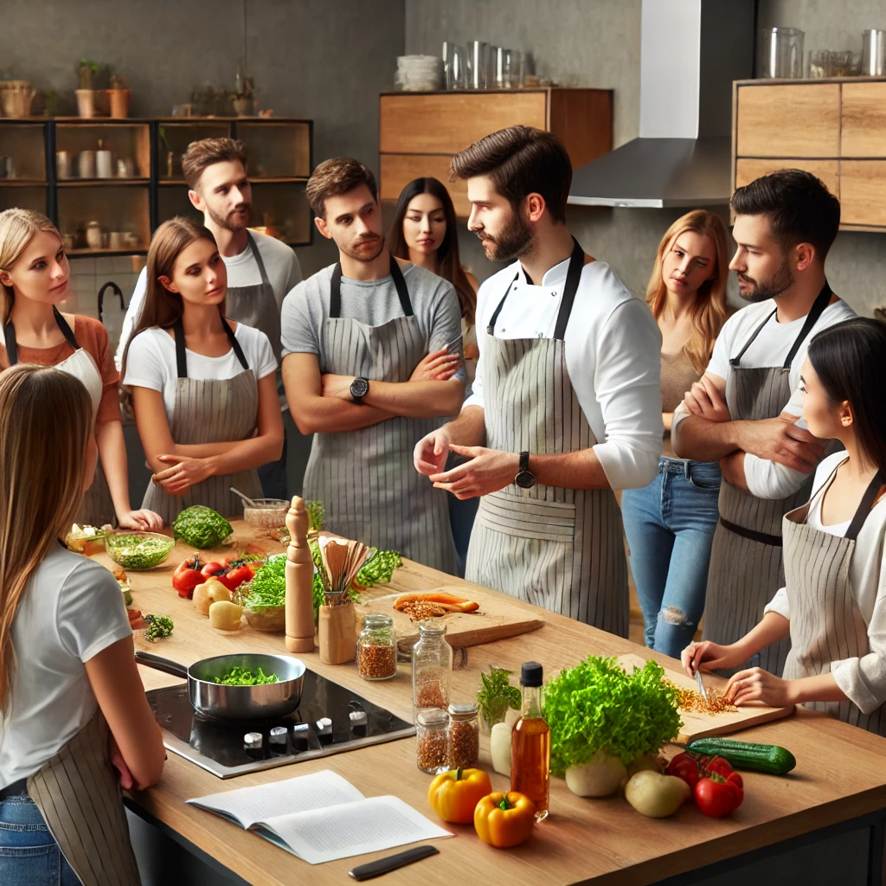
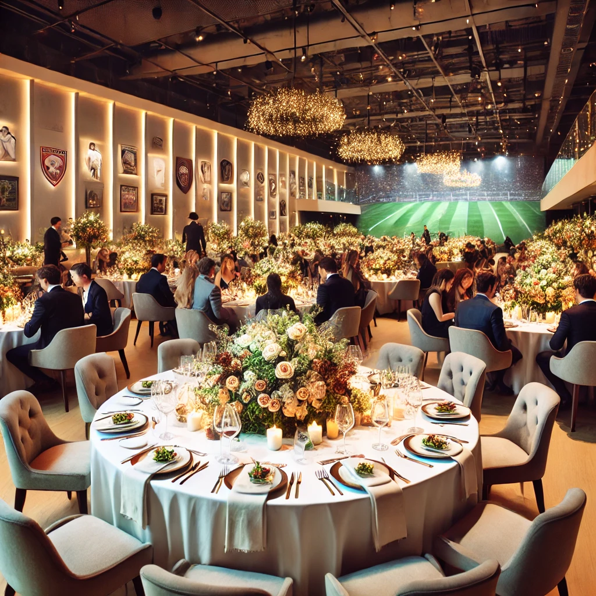

RESTAURANT
Événement Special
Atelier de Cuisine
Participez à notre atelier de cuisine le lundi 15 août et apprenez à préparer des plats sains et délicieux.
Événement a venir
Dîner de Gala
Rejoignez-nous pour un dîner de gala exclusif le samedi 30 août. Profitez d'un menu à cinq plats préparé par nos chefs.
Bienvenue dans Notre Notre Restaurant
Découvrez notre restaurant santé, un lieu où la nutrition équilibrée et le plaisir gustatif se rencontrent harmonieusement. Nous sommes fiers de vous offrir un menu riche en options saines, savoureuses et nutritives, élaboré par nos chefs experts en collaboration avec des nutritionnistes. Que vous recherchiez des plats végétariens, véganes, sans gluten ou simplement équilibrés, notre restaurant répond à toutes vos attentes. Utilisant des ingrédients frais, locaux et biologiques, chaque repas est conçu pour vous aider à atteindre vos objectifs de bien-être tout en ravissant vos papilles. Venez déguster des salades créatives, des smoothies revitalisants, des plats principaux savoureux et des desserts légers dans une ambiance conviviale et accueillante. Faites de chaque repas une étape vers une vie plus saine.
Heures d'ouverture
Nous sommes ouverts du lundi au vendredi de 8:00 a 22:00.
Plats en vedette
| Plat | Prix |
|---|---|
| Salade Quinoa et Avocat | 12$ |
| Poulet Grillé et Légumes Vapeur | 15$ |
| Bowl de Saumon et Riz Brun | 18$ |
| Wrap Végétarien aux Falafels | 10$ |
| Smoothie Bowl aux Fruits et Granola | 8$ |
Témoignages
"Succulent et healthy." - Grace Bond
"Je suis amoureuse de la salade Quinoa!" - Meyssem Checkmen
Nos chefs
Chef Jean-Pierre
Expert en cuisine française et méditerranéenne, Chef Jean-Pierre apporte une touche d'élégance à chaque plat.
Chef Lisa
Passionnée par la cuisine végétarienne, Chef Lisa crée des plats innovants et sains pour tous les goûts.
Chef Malik
Avec une spécialisation en pâtisserie, Chef Malik ravit vos papilles avec ses desserts délicats et délicieux.